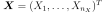
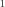

TensorApproximationAlgorithm¶
-
class
TensorApproximationAlgorithm(*args)¶ Tensor approximation algorithm.
- Available constructors:
- TensorApproximationAlgorithm(inputSample, outputSample, distribution, functionFactory, nk)
Parameters: - inputSample, outputSample : 2-d sequence of float
The input random variables  and the output samples
 of a model evaluated apart.
of a model evaluated apart.- distribution :
Distribution Joint probability density function
 of the physical input vector
of the physical input vector  .
.- functionFactory :
OrthogonalProductFunctionFactory The basis factory.
- degrees : sequence of int
The size of the basis for each component Of size equal to the input dimension.
- maxRank : int, optional (default=1)
The maximum rank
See also
Notes
TensorApproximationAlgorithm allows to perform a low-rank approximation in the canonical tensor format (refer to [Rai2015] for other tensor formats and more details).
The canonical tensor approximation of rank  reads:
The available alternating least-squares algorithm consists in successive approximations of the coefficients in the basis of the j-th component:
The full canonical tensor approximation of rank
 reads:
reads:The decomposition algorithm can be tweaked using the key TensorApproximationAlgorithm-DecompositionMethod.
Examples
>>> import openturns as ot >>> # Define the model >>> dim = 1 >>> model = ot.SymbolicFunction(['x'], ['x*sin(x)']) >>> # Create the input distribution >>> distribution = ot.ComposedDistribution([ot.Uniform()]*dim) >>> factoryCollection = [ot.FourierSeriesFactory()] * dim >>> functionFactory = ot.OrthogonalProductFunctionFactory(factoryCollection) >>> size = 10 >>> X = distribution.getSample(size) >>> Y = model(X) >>> nk = [5] * dim >>> maxRank = 1 >>> algo = ot.TensorApproximationAlgorithm(X, Y, distribution, functionFactory, nk, maxRank) >>> algo.run() >>> result = algo.getResult()
Methods
getClassName()Accessor to the object’s name. getDistribution()Accessor to the joint probability density function of the physical input vector. getId()Accessor to the object’s id. getInputSample()Accessor to the input sample. getMaximumAlternatingLeastSquaresIteration()Maximum ALS algorithm iteration accessor. getMaximumRadiusError()Maximum radius error accessor. getMaximumResidualError()Maximum residual error accessor. getName()Accessor to the object’s name. getOutputSample()Accessor to the output sample. getResult()Result accessor. getShadowedId()Accessor to the object’s shadowed id. getVisibility()Accessor to the object’s visibility state. hasName()Test if the object is named. hasVisibleName()Test if the object has a distinguishable name. run()Compute the response surface. setDistribution(distribution)Accessor to the joint probability density function of the physical input vector. setMaximumAlternatingLeastSquaresIteration(…)Maximum ALS algorithm iteration accessor. setMaximumRadiusError(maximumRadiusError)Maximum radius error accessor. setMaximumResidualError(maximumResidualError)Maximum residual error accessor. setName(name)Accessor to the object’s name. setShadowedId(id)Accessor to the object’s shadowed id. setVisibility(visible)Accessor to the object’s visibility state. -
__init__(*args)¶ Initialize self. See help(type(self)) for accurate signature.
-
getClassName()¶ Accessor to the object’s name.
Returns: - class_name : str
The object class name (object.__class__.__name__).
-
getDistribution()¶ Accessor to the joint probability density function of the physical input vector.
Returns: - distribution :
Distribution Joint probability density function of the physical input vector.
- distribution :
-
getId()¶ Accessor to the object’s id.
Returns: - id : int
Internal unique identifier.
-
getInputSample()¶ Accessor to the input sample.
Returns: - inputSample :
Sample Input sample of a model evaluated apart.
- inputSample :
-
getMaximumAlternatingLeastSquaresIteration()¶ Maximum ALS algorithm iteration accessor.
Returns: - maxALSIteration : int
The maximum number of iterations for the alternating least-squares algorithm used for the rank-1 approximation.
-
getMaximumRadiusError()¶ Maximum radius error accessor.
Returns: - maxRadiusError : float
Convergence criterion on the radius during alternating least-squares algorithm used for the rank-1 approximation.
-
getMaximumResidualError()¶ Maximum residual error accessor.
Returns: - maxResErr : float
Convergence criterion on the residual during alternating least-squares algorithm used for the rank-1 approximation.
-
getName()¶ Accessor to the object’s name.
Returns: - name : str
The name of the object.
-
getOutputSample()¶ Accessor to the output sample.
Returns: - outputSample :
Sample Output sample of a model evaluated apart.
- outputSample :
-
getResult()¶ Result accessor.
Returns: - result :
TensorApproximationResult The result of the approximation.
- result :
-
getShadowedId()¶ Accessor to the object’s shadowed id.
Returns: - id : int
Internal unique identifier.
-
getVisibility()¶ Accessor to the object’s visibility state.
Returns: - visible : bool
Visibility flag.
-
hasName()¶ Test if the object is named.
Returns: - hasName : bool
True if the name is not empty.
-
hasVisibleName()¶ Test if the object has a distinguishable name.
Returns: - hasVisibleName : bool
True if the name is not empty and not the default one.
-
run()¶ Compute the response surface.
-
setDistribution(distribution)¶ Accessor to the joint probability density function of the physical input vector.
Parameters: - distribution :
Distribution Joint probability density function of the physical input vector.
- distribution :
-
setMaximumAlternatingLeastSquaresIteration(maximumAlternatingLeastSquaresIteration)¶ Maximum ALS algorithm iteration accessor.
Parameters: - maxALSIteration : int
The maximum number of iterations for the alternating least-squares algorithm used for the rank-1 approximation.
-
setMaximumRadiusError(maximumRadiusError)¶ Maximum radius error accessor.
Parameters: - maxRadiusError : float
Convergence criterion on the radius during alternating least-squares algorithm used for the rank-1 approximation.
-
setMaximumResidualError(maximumResidualError)¶ Maximum residual error accessor.
Parameters: - maxResErr : float
Convergence criterion on the residual during alternating least-squares algorithm used for the rank-1 approximation.
-
setName(name)¶ Accessor to the object’s name.
Parameters: - name : str
The name of the object.
-
setShadowedId(id)¶ Accessor to the object’s shadowed id.
Parameters: - id : int
Internal unique identifier.
-
setVisibility(visible)¶ Accessor to the object’s visibility state.
Parameters: - visible : bool
Visibility flag.